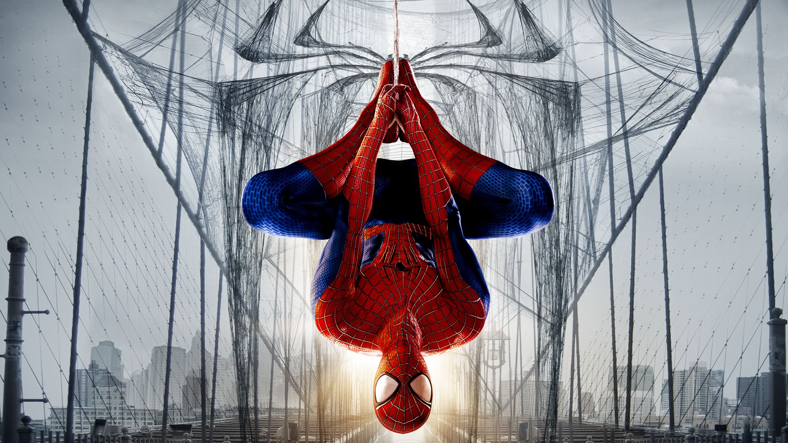

Why Spiderman is the Best Marvel Hero!
The Amazing Spider-Man is the greatest superhero because he represents the purest definition of heroism: choosing to do good when there is absolutely nothing to gain. Unlike heroes backed by unlimited wealth, advanced technology, or godlike status, Peter Parker is an ordinary person burdened with extraordinary responsibility. He struggles financially, loses loved ones, sacrifices relationships, and is often hated by the very people he saves. Yet, despite having every reason to walk away, he continues to protect others. What makes Spider-Man truly exceptional isn't his strength, intelligence, or abilities; it's that he could choose an easier life but refuses to abandon people who need him. His greatest superpower is his character. While other heroes demonstrate what it means to be powerful, Spider-Man demonstrates what it means to be good. The greatest hero isn't the one who can save the world, but the one who keeps choosing to save it even when the world gives him nothing in return.